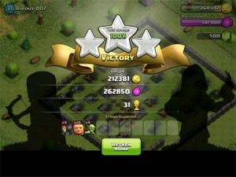
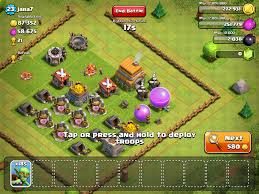
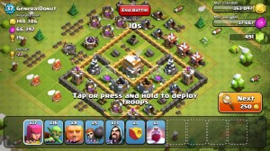

Attacking Players

The Fun Part
The two main reasons to attack people are to increase your Trophy count and to gain Resources.
When raiding for Resources, most people�s main goal is to steal Gold, which is considered more valuable by players, since it�s easier to spend on building walls and defenses. Elixir is mostly for training Troops and offensive buildings, which has longer build and upgrade times.
People raid others for Resources because it�s a much faster way to gain Gold and Elixir than by collecting them yourself. You will only be limited by your own skill, and amount of time you are able to invest.
When choosing which village to attack, you are given the option for skip to the next base � though it�ll cost some Gold.

Ideally, when you raid, you would want to deploy as few troops as possible and gain as much Resources as possible. The amount you were able to steal has to be worth the investment you made to get them (in terms of the cost of troops deployed, and the cost and time needed to rebuild your army).
NOTE: Remember if you don�t manage to destroy an enemy�s Town Hall, you stand to lose about 20 Trophies.
How do I decide if a base is worth attacking?
Here�s the checklist:
- Total resources - You�ll be looking for bases with the most loot, typically 100 000 Gold or more.
- Difficulty of stealing resources - Don�t just look at the amount, look at how well-protected their Resources are. Will it take more troops than it�s worth just to penetrate the enemy�s defenses?
- Where are the resources located? � And has the user been online to collect them recently? Are they in storage, or in the mines/collectors? Uncollected loot left in mines/collectors are easier to steal than those in storage. Also, look at the amount of loot. If the numbers are round numbers like 20 000, 31 500 or 102 550 � most likely that�s a player who hasn�t logged in to play for some time. His resources will be uncollected, not in Storage, and you can aim to raid straight from their Resource collectors. If not, and the total resources are odd numbers, the user has just collected his Resources and you�ll have to aim for his Storages. He might have a high number of one Resource and a lower amount of another (because he just collected and spent some on building something), so look at the Storage for the higher Resource and how difficult it would be to steal.
You can actually look at the base�s Storages/Collectors and see how full the levels of the Resource are, if both numbers are nice and high. The level of Elixir and the amount of Gold differs according to how empty or full the Storage or Collector is.
Example: Elixir Collector
Empty Collector
A little full
Half-full
Almost-full
Full
NOTE: There is a graphical glitch where a full collector/mine/storage can appear to be empty. When attacking it, the gold/elixir will reappear (and in some cases, disappear again). Don�t worry though, it�s just a graphical glitch. You should still be awarded the correct amounts of gold/elixir after the attack is over, assuming you won. With experience, you could probably even detect the glitch � if some collectors are empty and some are full, or if the base has a high amount of resources in a nice round number and the mines/collectors appear to be empty, the resources are probably there, just invisible due to the glitch.
So, should I attack this base?
You need to decide this on your own. Calculate the cost of the units you would have to deploy and how much you would lose if you weren�t successful in your attack. Are the Resources easy to steal, or too heavily protected for your current army? Are there a lot of Resources? Are there Resource collectors/storages that you can easily raid and how much is in them? Do they have Clan Castle troops that might make life difficult? If they do, can you lure them out? Are they units that your army can handle? And Level 7 or higher Town Halls might have hidden teslas waiting for you, so consider that as well.
HINT: Tombstones scattered around the Clan Castle might indicate that the Clan Castle troops were already killed from another attack.
You�re given 30 seconds to scan the base and decide if you�re going to attack it. Even if you run out of time, as long as you don�t deploy Troops, you can still tap �End Battle� and it won�t be counted as a loss. If you have deployed Troops, you can�t change your mind, and you�ll have to attack.
Tips and Tricks for Attacking
- Check for Clan Castle troops first if you can. Put down a unit to test if the Castle is occupied. It�s better to find out early on rather than later, and have the defenders pour out to ruin your carefully crafted battle plan.
- Decrease your waiting time for Troops by queuing up Troops in your Barracks before you go off looking for a match. When you come back, most of them should have completed training and will be waiting for you in your army camp. Saves you time so you don�t have to wait for your army to be rebuilt between attacks.
- Check opponent�s Town Hall level. If it�s lower than yours, remember that you can only gain a certain percentage of resources from them. If the level is -1 from yours, you can only steal 90% of available resources. If it�s -2, you can only raid 50%, and at -3, you only get 25%. At -4 levels and more, you only get 5% of total resources.
- Depending on where the resource comes from, the amount you can steal from it might be capped. Here�s a table:
| Resource source | Maximum amount that can be stolen | Capped? |
| Town Hall | 100% | No |
| Storages | 25% | Yes. You can only steal 198 000 of each resource. |
| Collectors/Mines | 50% | No |
| Dark Elixir Storages | 5% | No |
| Dark Elixir Drills | 75% | No |
- When taking Revenge, design your army to match your opponent�s defenses. You can replay the battle and visit his base. Take note of what he has and search out weak points that you can take advantage of. Then train your units and craft your battle plan.
Abandoned Bases
A base is considered �abandoned� if the player has left it alone and not returned to play the game for 50 hours or more. These bases are a real treat, because they are a Paradise of easy loot.
In the event you find a base that has any or all of these characteristics:
- Gold Mines/Elixir Collectors that are full
- Loot in high, round numbers � indicating that the collectors are at full capacity and the resources in them haven�t been collected.
- All builders are sleeping � indicated by floating �ZZZ� above their huts
- No league badge
- No Clan, indicated by a lack of Clan symbol on the Clan Castle
- Tombstones � from death of troops
- Many obstacles
- Few Trophies
- Any X-Bows present are unloaded � indicated by a lack of a bowstring. Also,any Inferno Tower will be dark and lifeless.
- Gold/Elixir Storages appear empty from being repeated raids.

That�s likely an abandoned base, where the player hasn�t played in a while or has stopped playing. Feel free to take advantage of it. It will be easier to attack because:
- Clan Castle troops are dead, due to repeated attacks
- No traps, already set off in previous attacks
- Defenses might not be good, with un-upgraded walls and defenses, or a poorly designed base.
- X-Bows and Inferno Towers are unloaded and not in operation.
You can change your usual strategy and use more Goblins than normal, especially if you want those Resources.